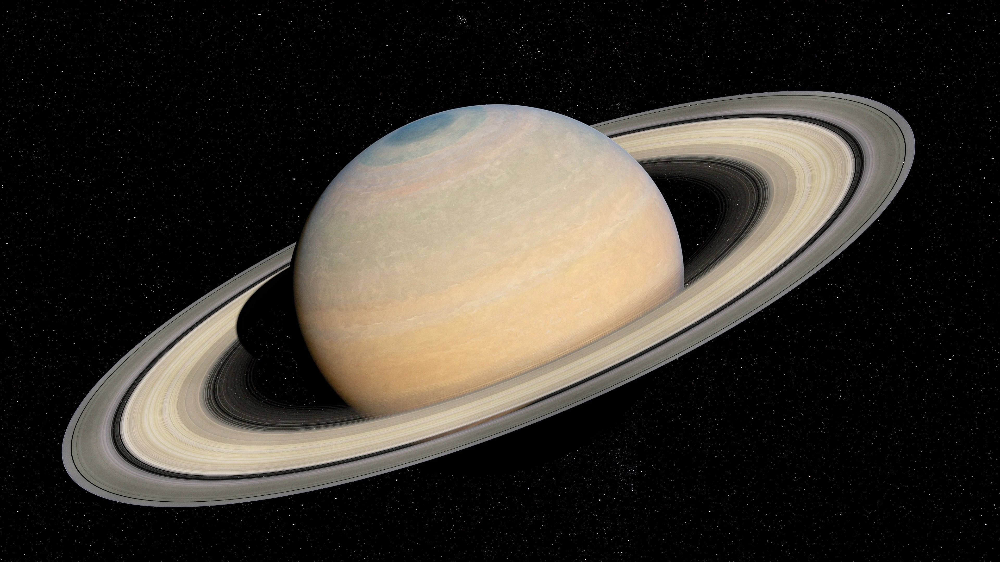

Planet Raksasa Cincin
Saturnus adalah planet keenam dari Matahari dan planet terbesar kedua di Tata Surya setelah Yupiter. Diklasifikasikan sebagai raksasa gas, Saturnus memiliki radius rata-rata sekitar sembilan setengah kali radius Bumi. Meskipun memiliki volume yang sangat besar, kerapatan rata-rata Saturnus hanyalah satu per delapan kerapatan Bumi, menjadikannya satu-satunya planet di Tata Surya yang kurang padat daripada air. Saturnus paling dikenal dengan sistem cincin sekundernya yang megah, yang sebagian besar terdiri dari partikel-partikel es air dengan sedikit puing-puing batuan dan debu.